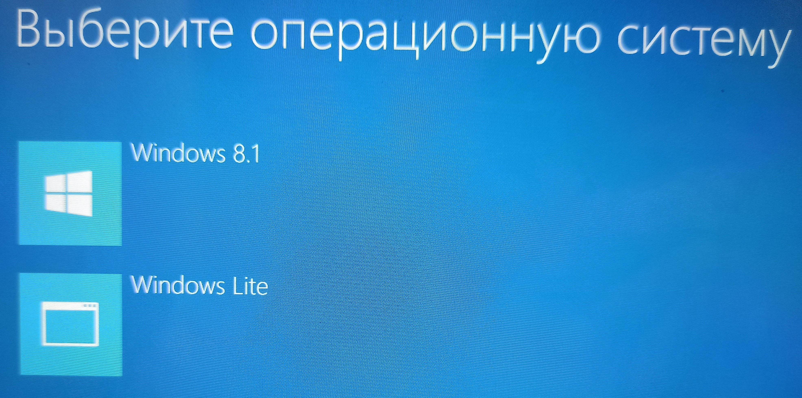

В данной вики собрана вся полезная информация, которую вам нужно знать для комфортной игры на планшетах Microsoft Surface либо на любом другом, основанном на процессоре Intel Atom.
Прежде всего нужно рассказать про основы. Лучше всего установить Windows 8.1, нежели пользоваться Windows 10 или какой-нибудь сборкой Windows 11. У этого решения есть как плюсы, так и минусы. Из плюсов: низкое потребление оперативной памяти, быстрая скорость загрузки ОС, а также быстрая и отзывчивая работа в целом.
Скачать её можно с официального сайта Microsoft: Загрузить Windows 8.1.
А вот из минусов это несовместимость с современными версиями программ. Например:
- Adobe Photoshop
- Visual Studio Code
- Steam
- Эмуляторы PCSX2 и Dolphin
- Любые браузеры на основе Chromium
На данный момент Steam всё ещё работает, но с 01.01.2024 он прекратит поддержку Windows 8.1. Если вас это не пугает и вам не нужны самые свежие версии различных программ, то Windows 8.1 - это отличный выбор. Однако, я предлагаю вам установить Windows 8.1 в качестве основной системы и Windows 10 / Windows 11 (по выбору) в качестве дополнительной, как раз на такой случай, если какая-либо программа не поддерживает Windows 8.1. Так как Windows 10 / Windows 11 будет у нас дополнительной операционной системой, вспомогательной, я рекомендую установить облегчённую сборку Windows Lite, которую можно скачать с официального сайта её разработчика.
Если при установке данной сборки отметить галочку "Применить сжатие Compact OS", то Windows 11 после установки будет занимать всего лишь 2.5 ГБ пространства на диске C:\, однако стоит отметить, что данная технология немного ухудшит производительность, так как принцип её работы состоит в том, что она сжимает системные файлы в папке C:\Windows и системе нужна некоторая часть ресурсов (мощности процессора и количества ОЗУ) для того, чтобы на лету распаковывать эти файлы. Во всяком случае так говорят в интернете, я же с этим не сталкивался, но имейте это в виду.